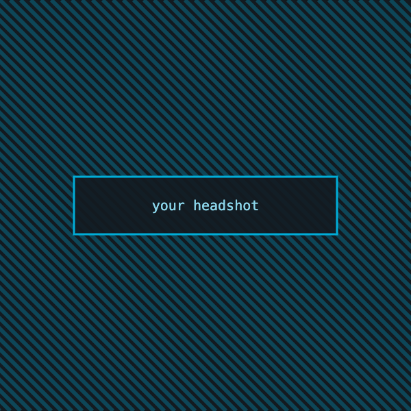

gophercon-datadog.cssReal theme file, real fonts, real assets. Every slide below is the markup Marp emits from deck.md.
_class: title gopher-hero
Staff Engineer · Datadog
_class: section
Where the scheduler spends its time, and how to see it.
default + code panel (h6 before the fence)
// Collect runs one CPU profile window.
func (p *Profiler) Collect(ctx context.Context) error {
buf := p.pool.Get()
defer p.pool.Put(buf)
if err := pprof.StartCPUProfile(buf); err != nil {
return fmt.Errorf("start profile: %w", err)
}
}_class: emoji
_class: chart
_class: stat
of the CPU time was in code nobody had read for two years.
_class: compare
Before
buf := new(bytes.Buffer)412 ms
18 MB / minute
After
buf := p.pool.Get()88 ms
0.4 MB / minute
_class: terminal
$ go tool pprof -http=:6060 cpu.pprof
Fetching profile over HTTP from localhost:6060
Saved profile in ~/pprof/pprof.samples.cpu.001.pb.gz
Serving web UI on http://localhost:6060
$ go test -bench=Collect -benchmem
BenchmarkCollect-10 14322 81.4 ns/op 0 B/op_class: meme + ![bg contain]
when the profiler blames the GC
default — table
| Change | Allocations | p99 | Verdict |
|---|---|---|---|
| Buffer pool | −99% | −79% | Ship it |
| Tighter sampling | −4% | −2% | Noise |
| GC tuning | 0% | +1% | Revert |
_class: dark + .cols
Wide bars are cost, not depth. Compare two windows before you tune anything.
Every frame is a decision someone made. Find the decision, not the frame.
default — blockquote callout
A profile is a hypothesis, not a verdict.
_class: section (02)
What survived contact with production.
_class: agenda
_class: photo + duotone filter chain
Nobody in the room agreed on what it meant.
fragments — ghosted until revealed
_class: punchline dark
_class: speaker

_class: end gopher-rocket